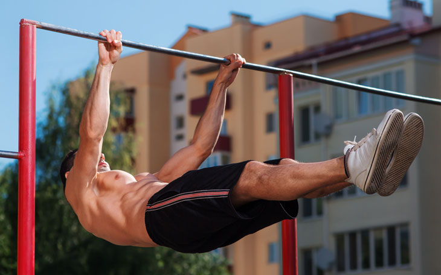
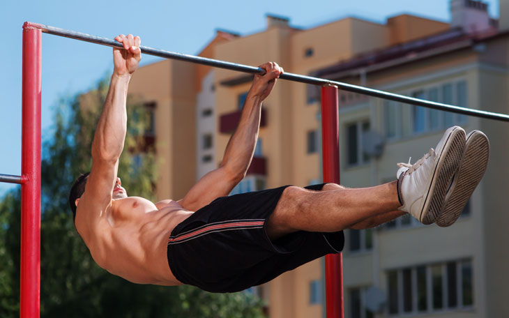

Sobre calistenia e sua história
 

A calistenia é uma forma de exercício físico que utiliza o peso corporal para desenvolver força, flexibilidade, resistência e coordenação. Ao contrário do treinamento com pesos ou máquinas, a calistenia se concentra em movimentos funcionais e naturais, como flexões, barras, agachamentos e abdominais.
História
- Antiguidade: A prática de exercícios com o peso corporal remonta à Grécia Antiga e à Roma Antiga, onde soldados e atletas usavam esses métodos para melhorar sua forma física e preparação para combates ou competições.
- Século XIX: O termo "calistenia" começou a ser amplamente utilizado no século XIX. A palavra deriva do grego "kallos" (beleza) e "sthenos" (força), refletindo a ideia de que a prática desses exercícios promove um corpo forte e harmonioso. Durante esse período, a calistenia se tornou popular nas escolas e academias, sendo vista como uma forma acessível e eficaz de melhorar a saúde geral.
- Século XX: A calistenia continuou a ser praticada ao longo do século XX, particularmente em contextos militares e escolares. Movimentos como a ginástica sueca, desenvolvida por Pehr Henrik Ling, promoveram a calistenia como parte de programas de educação física.
- Século XXI: Nos últimos anos, a calistenia experimentou um renascimento, especialmente com o surgimento do "street workout", uma modalidade que combina movimentos clássicos de calistenia com acrobacias e habilidades avançadas. Essa prática é popular em parques e espaços públicos, promovendo uma comunidade de praticantes que valorizam a força, a estética e a autodisciplina.
Conclusão
A calistenia é valorizada não apenas por sua eficácia, mas também por sua capacidade de promover uma conexão mais íntima entre mente e corpo, enfatizando o controle corporal, a disciplina e a progressão gradual.